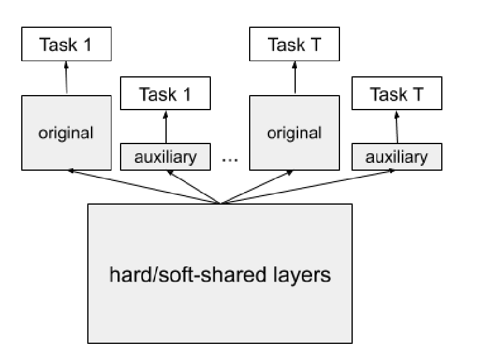
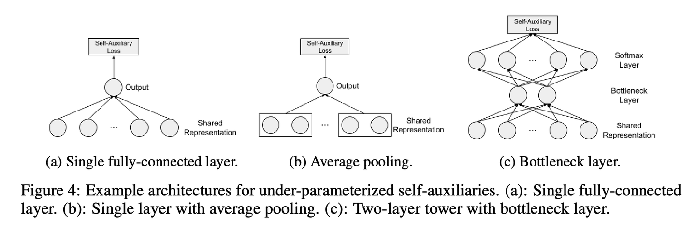

背景
多目标优化中有一个很常见的跷跷板问题，就是说在训练时，多个目标会相互影响，导致震荡—你降我升，我升你降。有时间还会出现Nan的结果，需要很仔细的调参测试+清洗数据才能训练出一个理想的模型。
针对这种问题，自然就有了一些尝试，比如从帕累托最优的角度寻找优化方向（阿里PEA），修改模型结构使Shared部分存储更泛化的信息（腾讯PLE）。不过这两个写的人都挺多了，就写一下Google Small Towers的这篇文章吧。
主要问题讨论
文章首先讨论了两个问题：
1. Over-parameterization对多任务模型的适用性
我们都知道over-parameterization对单任务模型是有价值的，那边对多任务模型是否成立？
这里以将多个目标的线性组合作为优化目标的例子，认为over-parameterization能够帮助处理各任务优化目标之间的冲突问题（既减少跷跷板问题的出现）。
2. 大型模型和小型模型的多目标学习表现对比
通过实验对比了大型模型和小型模型进行多目标学习中的不同表现。
实验中，不论是增加任务相关结构的复杂度，还是增加任务共享结构的复杂度，Pareto frontier都会呈现先变好在变差的趋势。
因此，文章认为over-parameterization并不利于多目标学习中的共享性，进而伤害了多目标学习中的泛化能力。因此，在多目标学习中，模型大小实质上是对模型有效性和泛化能力的一种平衡。
To summarize our insights, for a multi-task learning model, small models benefit from good multi-task generalization but hurts Pareto efficiency; big models theoretically have better Pareto efficiency but could suffer from loss of generalization.
Under-parameterized Self-auxiliaries模型结构
文章提出了under-parameterized self-auxiliaries的模型结构：
首先假设模型的共享方式是所有任务共享最下面的表示层（Hard Sharded，MMOE这种，PLE就不行）,既对任务t，有：
$$f_{t}(x; \theta_{sh}, \theta_{t})=f_{t}(h(x; \theta_{sh}); \theta_{t}), \forall t$$
其中 $\theta_t$ 是任务相关的参数， $\theta_sh$ 为共享参数， $h(x;\theta_sh)$ 既为共享的表示层输出。
文章在这个基础上对每个任务t增加了self-auxiliary tower的附属结构(既一个辅助任务的small tower)，该小塔输出和原来的任务相同，但参数 $\theta_t^{a}$ 很小（既小塔是一个很简单的结构）:
$$f_t^a(x; \theta_{sh}, \theta_t^a))=f_t(h(x;\theta_{sh}); \theta_t^a), \forall t$$
修改后的多目标模型结构
修改后多目标模型的结构是这样的：
损失函数
最后的Loss则是在原来的基础上加上了小塔的Loss:
$$\hat{L}(\theta)=\sum_{t=1}^Tw_t(\hat{L}(\theta_{sh},\theta_t)+\gamma \hat{L}(\theta_{sh},\theta_t^a))$$
其中： $$\hat{L}(\theta_{sh},\theta_t^a))=\frac{1}{n}\sum_{i=1}^nL_t(f_t^a(x; \theta_{sh}, \theta_t^a)), y_i^t)$$
这么改的原因自然就是前面的推理了：通过使用较小的模型来提高任务对不同的泛化能力。（任务量变成了原来的两倍，但是其中有一半任务是under-parameterized，因此也就降低了模型over-parameterized对共享性的破坏力）。
文章认为，这种通过强迫模型学习共享层来提高复数任务的的结构也是一种正则化的手段。
小塔结构示例
这里对小塔的结构没有什么限制，唯一的要求就是要比模型简单，下面是文章里的一些例子：
最后主要就是附录中的证明与实验细节了，建议直接读原文了解。
注释与思考
注1: Over-Parameterization的说明见"Reconciling modern machine-learning practice and the classical bias–variance trade-off“和”Two models of double descent for weak features“等文章，或者知乎相关讨论。
注2: 有意思的是Small Tower通过小塔来提升大塔多任务的效果，而阿里的Rocket Launching则是通过大塔来提高小塔的效果，这两个模型放在一起会怎么样呢。
注3: 最近发现还有一篇修改优化算法的文章：Gradient Surgery for Multi-Task Learning，不过还没来得急细看，等有空了试试对我们的任务有没有帮助。
Last modified on 2021-03-08